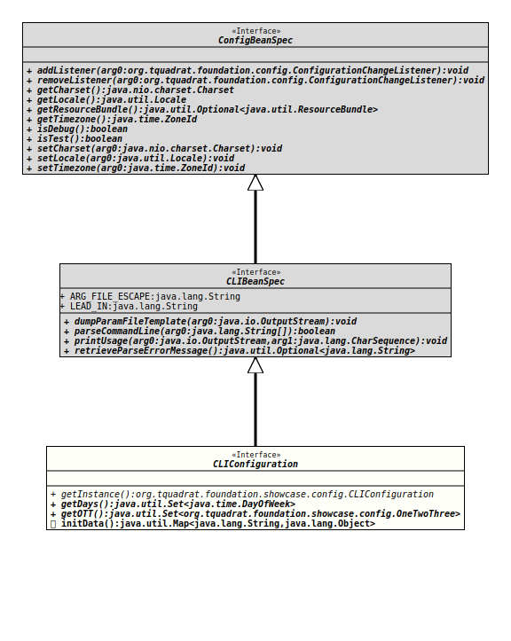

Interface CLIConfiguration
- All Superinterfaces:
org.tquadrat.foundation.config.CLIBeanSpec,org.tquadrat.foundation.config.ConfigBeanSpec
@ClassVersion(sourceVersion="$Id: CLIConfiguration.java 1054 2023-03-16 19:59:26Z tquadrat $")
@API(status=STABLE,
since="0.1.0")
@ConfigurationBeanSpecification(synchronizeAccess=true)
public interface CLIConfiguration
extends org.tquadrat.foundation.config.CLIBeanSpec
A configuration bean definition.
- Author:
- Thomas Thrien (thomas.thrien@tquadrat.org)
- Version:
- $Id: CLIConfiguration.java 1054 2023-03-16 19:59:26Z tquadrat $
- Since:
- 0.1.0
- UML Diagram
-

UML Diagram for "org.tquadrat.foundation.showcase.config.CLIConfiguration"
{kind=link}
-
Field Summary
Fields inherited from interface org.tquadrat.foundation.config.CLIBeanSpec
ARG_FILE_ESCAPE, LEAD_IN -
Method Summary
Modifier and TypeMethodDescriptiongetDays()Returns the weekdays as set on the command line.static CLIConfigurationReturns the instance of the configuration bean.getOTT()Returns the One-Two-Three as set on the command line.initData()Initialises the configuration bean.Methods inherited from interface org.tquadrat.foundation.config.CLIBeanSpec
dumpParamFileTemplate, parseCommandLine, printUsage, retrieveParseErrorMessageMethods inherited from interface org.tquadrat.foundation.config.ConfigBeanSpec
addListener, getCharset, getLocale, getResourceBundle, getTimezone, isDebug, isTest, removeListener, setCharset, setLocale, setTimezone
-
Method Details
-
getInstance
Returns the instance of the configuration bean.- Returns:
- The configuration bean instance.
-
getDays
Returns the weekdays as set on the command line.- Returns:
- The weekdays.
-
getOTT
@Option(name="--ott", required=true, metaVar="OTT", usage="The One-Two-Three") @PropertyName("ott") Set<OneTwoThree> getOTT()Returns the One-Two-Three as set on the command line.- Returns:
- The One-Two-Three.
-
initData
Initialises the configuration bean.- Returns:
- The initialisation data.
-